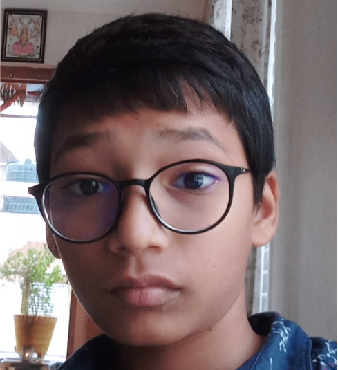

About Farm Master
Farm Master is an educational project showcasing modern agriculture, sustainable practices, and robotic farming technologies.
This platform is designed to help students, farmers, and agriculture enthusiasts understand traditional and modern farming methods through simple explanations, visuals, and real-world examples.
Farm master


B. Sathwik Reddy
Agriculture Enthusiast & Web Developer
Video opens safely on YouTube due to embed restrictions.
What We Cover
- Major crops grown across India
- Modern irrigation techniques
- Robotic and AI-based farming
- Common crop diseases and solutions
Our Mission
To educate students and farmers about smart agriculture, robotics, and sustainable farming practices through simple visual explanations and interactive content.